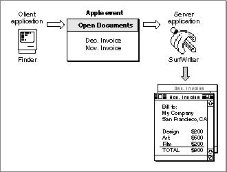

Legacy Document
Important: The information in this document is obsolete and should not be used for new development.
Important: The information in this document is obsolete and should not be used for new development.


About Apple Events
An Apple event is a high-level event that conforms to the Apple Event Interprocess Messaging Protocol. The Apple Event Manager uses the services of the Event Manager to send Apple events between applications on the same computer, between applications on remote computers, or from an application to itself.Applications typically use Apple events to request services and information from other applications or to provide services and information in response to such requests. Communication between two applications that support Apple events is initiated by a client application, which sends an Apple event to request a service or information. The application providing the service or the requested information is called a server application. The client and server applications can reside on the same local computer or on remote computers connected to a network. An application can also send Apple events to itself, thus acting as both client and server.
Figure 3-1 shows a common Apple event, the Open Documents event. The Finder is the client; it requests that the SurfWriter application open the documents named "Dec. Invoice" and "Nov. Invoice." The SurfWriter application responds to the Finder's request by opening windows for the specified documents.
Figure 3-1 An Open Documents event

The Finder is considered the client application for the Open Documents event shown in Figure 3-1 because the Finder initiates the request for a service. The Finder can also be considered the source application for the same Open Documents event. A source application for an Apple event is one that sends an Apple event to another application or to itself. Similarly, the SurfWriter application can be described as either the server application or the target application for the Open Documents event shown in Figure 3-1. A target application for an Apple event is the one addressed to receive the Apple event. The terms client application and source application are not always synonymous, nor are the terms server application and target application. Typically, an Apple event client application sends an Apple event requesting a service to an Apple event server application;
in this case, the server application is the target application for the Apple event. A server application may return information to the client in a reply Apple event--in which case, the client application is the target application for the reply.To perform the requested service--that is, to open the specified documents--the SurfWriter application shown in Figure 3-1 first uses the Apple Event Manager to identify the event (the Open Documents event) and to dispatch the event to SurfWriter's handler for that Apple event. An Apple event handler is an application-defined function that extracts pertinent data from an Apple event, performs the requested action, and (usually) returns a result. In this case, SurfWriter's Open Documents event handler examines the Apple event to determine which documents to open (Dec. Invoice and Nov. Invoice), then opens them as requested.
To identify Apple events and respond appropriately, every application can rely on a vocabulary of standard Apple events that developers and Apple have established for all applications to use. These events are defined in the Apple Event Registry: Standard Suites. The standard suites, or groups of related Apple events that are usually implemented together, include the Required suite, the Core suite, and functional-area suites such as the Text suite and the Database suite. To function as a server application, your application should be able to respond to all the Apple events in the Required suite and any of those in the Core and functional-area suites that it is likely to receive. For example, most word-processing applications should be capable of responding to the Apple events in the Text suite, and most database applications should be capable of responding to those in the Database suite.
If necessary, you can extend the definitions of the standard Apple events to match specific capabilities of your application. You can also define your own custom Apple events; however, before defining custom events, you should check with the Apple Event Registrar to find out whether you can adapt existing Apple event definitions or definitions still under development to the needs of your application.
By supporting the standard Apple events in your application, you ensure that your application can communicate effectively with other applications that also support them. Instead of supporting many different custom events for a limited number of applications, you can support a relatively small number of standard Apple events that can be used by any number of applications.
You can begin supporting Apple events by making your application a reliable server application: first for the required Apple events, then for the core and functional-area Apple events as appropriate. Once your application can respond to the appropriate standard Apple events, you can make it scriptable, or capable of responding to instructions written in a system-wide scripting language such as AppleScript. If necessary, your application can also send Apple events to itself or to other applications.
"About the Apple Event Manager," which begins on page 3-40, provides more information about the steps you need to take to support Apple events in your application.
The next section, "Apple Events and Apple Event Objects," describes how Apple events can describe data and other items within an application or its documents. Subsequent sections describe the basic organization of Apple events and the data structures from which they are constructed.
Subtopics
- Apple Events and Apple Event Objects
- Apple Event Attributes and Parameters
- Data Structures Within Apple Events